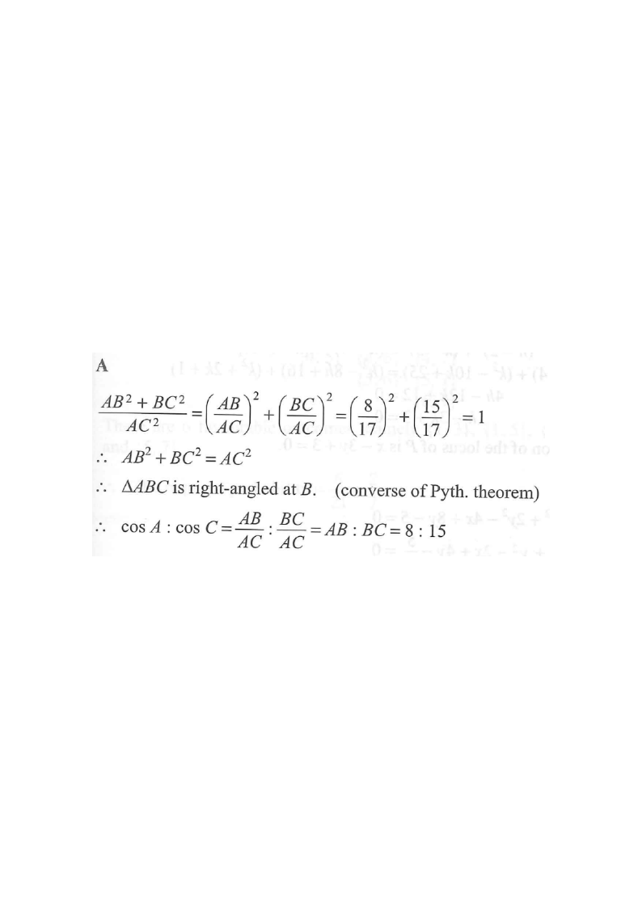

Drag the sliders or scroll the solution steps to highlight different parts.
Rotate figure (visual only)
In $\Delta ABC$, $AB:BC:AC = 8:15:17$. Find $\cos A:\cos C$.

Let the ratio be $AB:BC:AC = 8:15:17$. Introduce a positive scale factor $k$:
$$AB=8k,\qquad BC=15k,\qquad AC=17k$$
Since $AB+BC=8k+15k=23k>17k=AC$, a triangle with these sides can be formed.
Compute the squares of the two shorter sides and of the longest side:
$$AB^2+BC^2=(8k)^2+(15k)^2=64k^2+225k^2=289k^2$$
$$AC^2=(17k)^2=289k^2$$
Since $AB^2+BC^2=AC^2$, the triangle is right-angled at $B$, i.e. $\angle B = 90^\circ$ and $AC$ is the hypotenuse.
For the acute angle $A$ at vertex $A$, the adjacent side is $AB$ and the hypotenuse is $AC$:
$$\cos A=\frac{AB}{AC}=\frac{8k}{17k}=\frac{8}{17}$$
For the acute angle $C$ at vertex $C$, the adjacent side is $BC$ and the hypotenuse is $AC$:
$$\cos C=\frac{BC}{AC}=\frac{15k}{17k}=\frac{15}{17}$$
$$\cos A:\cos C=\frac{8}{17}:\frac{15}{17}=8:15$$
The common factor $1/17$ cancels; equivalently $\cos A:\cos C=\frac{AB}{AC}:\frac{BC}{AC}=AB:BC=8:15$.